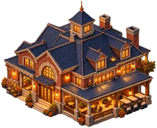

<!doctype html>
<html lang="en"><head><meta charset="utf-8"><title>P23 m6: Buildings, the clubhouse snapping to a drive</title>
<link rel="stylesheet" href="kit.css"><script src="mock.js"></script></head>
<body><div class="stage" id="s">
  
  <svg class="ov" id="ov"></svg>
</div>
<script>
const M = MOCK, S = document.getElementById('s'), ov = document.getElementById('ov');
const cam = { X: 31795.788635831224, Y: 83608.5867209195, z: 0.12, w: 1600, h: 900 }, P = M.iso(cam);
// a gravel course drive from the road (off screen, lower left) along x at y = 1095; the clubhouse ghost (40 x 24 tiles) with its front on the drive's verge
const drive = [[1495, 1094], [1626, 1094], [1626, 1096], [1495, 1096]];
const club = [[1570, 1070], [1610, 1070], [1610, 1093.5], [1570, 1093.5]];
const cT = P(1570, 1070), cR = P(1610, 1070), cB = P(1610, 1093.5), cL = P(1570, 1093.5), front = P(1590, 1093.5), dmid = P(1590, 1095);
const end = P(1626, 1095);
M.svg(ov, `
  <path d="${M.poly(P, drive)}" fill="rgba(170,150,118,0.95)" stroke="rgba(90,75,55,0.9)" stroke-width="1.2"/>
  <circle cx="${end[0]}" cy="${end[1]}" r="4" fill="rgba(170,150,118,1)"/>
  <path d="${M.poly(P, club)}" fill="rgba(245,181,46,0.16)" stroke="#f5b52e" stroke-width="2.5"/>
  <line x1="${front[0]}" y1="${front[1]}" x2="${dmid[0]}" y2="${dmid[1]}" stroke="#fff" stroke-width="3"/>
  <circle cx="${dmid[0]}" cy="${dmid[1]}" r="7" fill="#fff" stroke="#1b1406" stroke-width="2"/>`);
// the clubhouse picture as the ghost, centred on the footprint
const cxs = (cT[0] + cB[0]) / 2, cys = (cT[1] + cB[1]) / 2, w = cR[0] - cL[0];
S.insertAdjacentHTML('beforeend', ``);
M.chrome(S, { stage: 2, active: 'buildings', place: 'Golf club', money: '$479,300', season: { big: 'Founding season', small: 'Jan 1985 · 7 months to season end', done: 2, of: 9 } });
M.pointer(S, cxs + 10, cys + 20, null);
S.insertAdjacentHTML('beforeend', `
  <div class="tag big gold" style="left:${cR[0] - 30}px;top:${cT[1] - 36}px">Clubhouse · $45,000<span class="l2">front on the drive · faces it · one only</span></div>
  <div class="tag" style="left:${dmid[0] - 150}px;top:${dmid[1] + 16}px">Gravel drive · from the county road</div>`);
const card = (img, nm, ds, pr, sm, cls = '') => `<div class="card ${cls}"><div class="th pic" style="background-image:url(../../../../src/assets/businesses/integrated/${img}.webp)"></div><div><div class="nm">${nm}</div><div class="ds">${ds}</div></div><div class="pr">${pr}<small>${sm}</small></div></div>`;
S.insertAdjacentHTML('beforeend', `
<div class="glass panel">
  <div class="phead"><div class="badge"></div><div><h2>Buildings</h2><div class="sub">The course's houses: they face a drive or path</div></div>
    <div class="undo"><span>↶</span><span class="off">↷</span></div></div>
  <div class="tabs"><span class="on">Course</span><span>Tournament</span><span class="lock">Homes 🔒</span></div>
  <div class="sec" style="margin-top:10px">
    ${card('golf-clubhouse', 'Clubhouse', 'the front door: green fees, the crowd\'s gate; the tour needs it', '$45,000', 'one only', 'on')}
    ${card('golf-pro-shop', 'Pro shop', 'sells balls, clubs and caps', '$18,000', 'earns daily')}
    ${card('golf-cart-garage', 'Cart barn', 'carts for golfers; faster rounds', '$12,000', 'from 3 holes')}
    ${card('golf-halfway-pavilion', 'Halfway house', 'food at the turn', '🔒 9 holes', 'unlocks')}
  </div>
  <div class="dim" style="font-size:11px;margin-top:4px;line-height:1.45">Click to place · it snaps to the nearest drive or path within 12 m · <span class="kc">R</span> turns it when nothing is near · <span class="kc">Esc</span> stops</div>
  <div class="more"><div class="h">More options <span class="cnt">free turn · no snap (Alt)</span><span class="chev">▸</span></div></div>
</div>`);
S.insertAdjacentHTML('beforeend', `
  <div class="glass guide"><span class="step">Step 3 of 7</span><span>Place the clubhouse beside a drive. No drive yet? Paths ▸ Drives, or press the card's "Draw a drive" when it is refused.</span></div>
  <div class="note" style="left:1170px;top:150px;max-width:280px"><span class="n">1</span>The front <b>snaps to the drive</b> and the white dot shows the link (the Manor Lords and Anno pattern). Off any drive the ghost turns red: "Needs a drive within 12 m · Draw a drive".</div>
  <div class="note" style="left:470px;top:420px;max-width:220px"><span class="n">2</span>Tents, stands and gates move here from the top bar's Event panel: the <b>Tournament</b> tab, rent or buy on each card.</div>
  <div class="title-strip">P23 mockup m6 · Buildings (course houses snap to drives and paths)</div>`);
</script>
</body></html>
